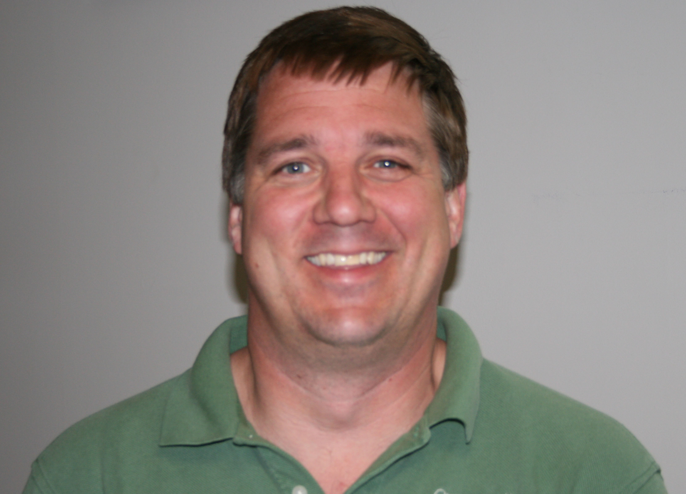

|  |
Director (CAP) and Assistant Professor Consulting Archaeology Program (CAP) Delehanty Hall, Trinity Campus (802) 656-4310 |
Before returning to the University of Vermont as a faculty member, John G. Crock, attended UVM as an undergraduate in the mid 1980s. After graduating from UVM, John returned to his home state of Maine to work for the University of Maine, supervising archaeological field work throughout Maine and Vermont.
In the early 90s, good fortune and an interest in islands (he grew up in Bar Harbor on Mount Desert Island) led John to the Caribbean to conduct archaeological research on the islands of Montserrat and later Anguilla. Following this experience, John entered graduate school at the University of Pittsburgh. His dissertation research focused on late prehistoric Amerindian society in Anguilla and the development of socially complex chiefdoms in the northern Lesser Antilles. John lived in Anguilla from 1995-98 conducting field work and received his Ph.D. in 2000, the same year he returned to Vermont to direct the Anthropology Department's Consulting Archaeology Program (UVM CAP). John keeps busy as the UVM CAP Director, overseeing numerous archaeological studies conducted across Vermont every year. He brings his extensive field experience into his Prehistoric Archaeology class, typically taught in the spring semester. John continues to be active in Caribbean archaeology as well, presenting papers at international conferences and co-instructing UVM's field school in Anguilla with Jim Petersen. John has authored dozens of technical reports for consulting archaeology projects and also has published articles on his research in New England and the Caribbean.